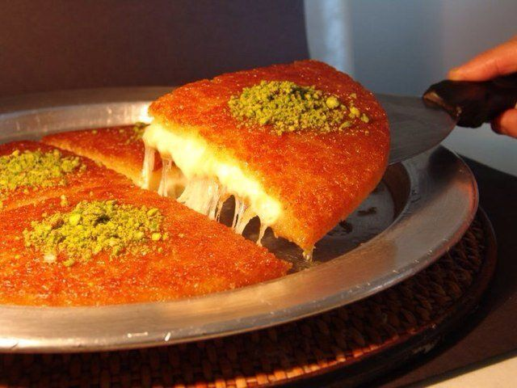

Turkish Kunefe

Description
Kunefe also known as kunafa or knafeh is one of the heavenly Turkish desserts made with syrup. It is mostly served at kebab restaurants after the main course like doner kebab. It is made with cheese and shredded Kadayif noodles soaked in sweet syrup.
What makes this dessert different from other syrupy desserts is that it must be eaten hot, right after it is cooked. Also, The quality of cheese inside is pretty significant to reach this perfection. It must be an unsalted melting cheese so that it complements sweetness of the dessert.
Ingredients
- Syrup (made with sugar, water and lemon)
- Raw kadayif noodles
- Cheese (mozzarella works fine)
- Butter
- Pistachio for garnish
- Two pans for two portions
- Two extra pans so that we can flip the dessert when cooking.
Steps
- Make the syrup first.
- Butter the bottom of four pans.
- Place the first layer in a pan
- Shred some unsalted cheese like mozzarella over it and cover it with buttered kadayif dough noodles.
- Over the lowest heat on the stove, cook it until the bottom is golden.
- Pour cold syrup over the dessert when it is still hot.
- Garnish with ground pistachio and serve immediately.